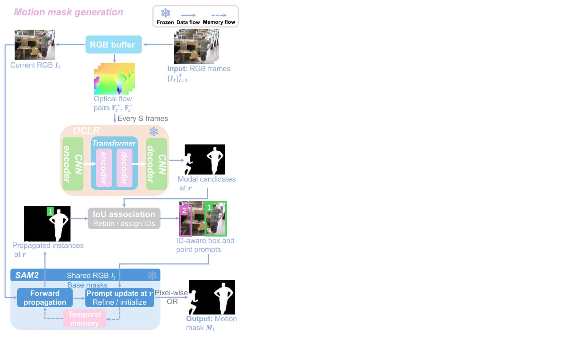
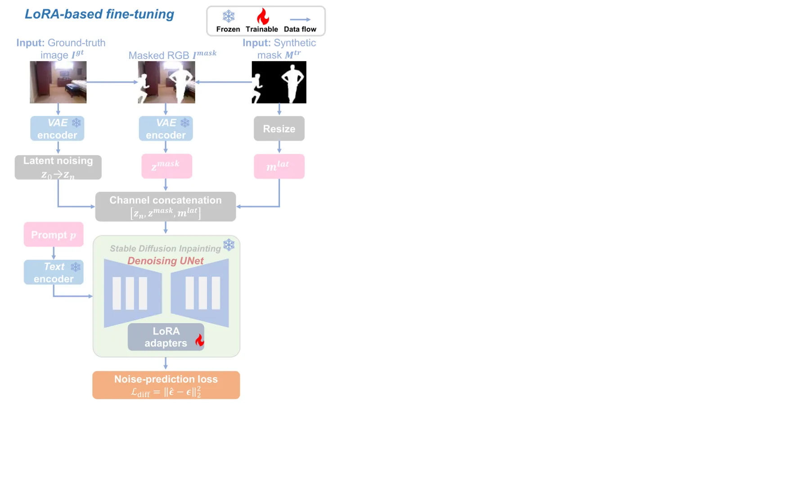
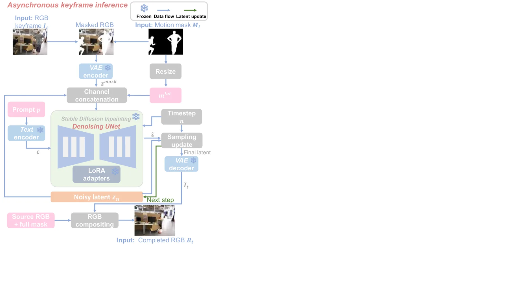
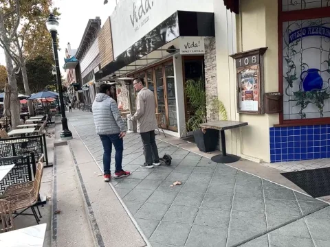
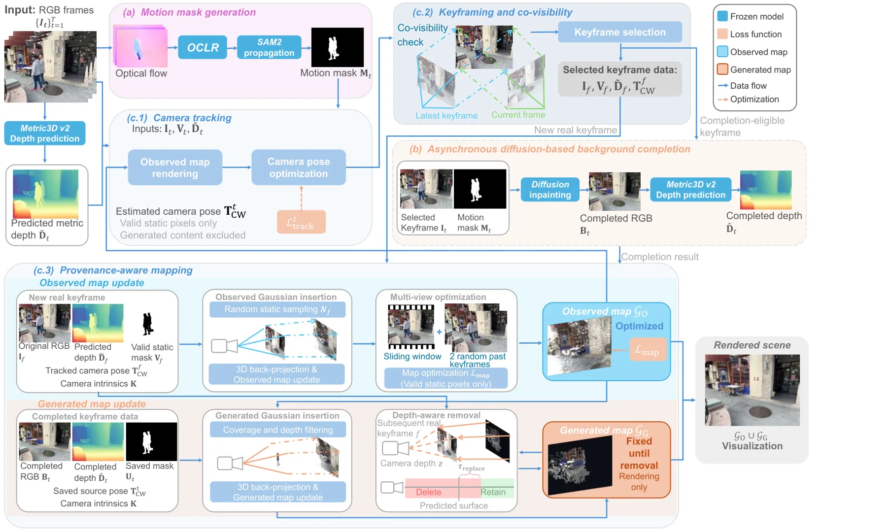
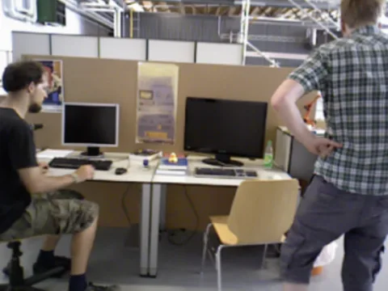

DPGS-SLAM：给扩散补全的背景高斯打“来源标签”，让动态遮挡区可临时表示又不污染位姿
DPGS-SLAM: Diffusion-Prior and Provenance-Aware Monocular Gaussian Splatting SLAM for Dynamic Visual Sensing
作者报告平均 ATE RMSE 为 TUM RGB-D 1.2 cm、BONN RGB-D 2.7 cm（BONN 上为对比方法最低），StaDy4D 三段平均 PSNR 比 WildGS-SLAM 高 4.60 dB。消融显示：去掉全部运动掩码，TUM 平均 ATE 从 1.2 cm 退化到 3.1 cm；去掉生成高斯的替换机制，动态掩码内 PSNR 从 22.1 dB 掉到 16.5 dB。代价是跟踪 510 ms/帧、建图 1205 ms/帧，仍不是实时系统；作者也承认长期未被真实观测的区域会保留错误的生成外观。
ATE RMSE on TUM RGB-D
ATE RMSE on BONN RGB-D
PSNR gain vs WildGS-SLAM
Tracking time per frame
作者、单位与技术谱系 · Research context
作者与单位
研究脉络
- WildGS-SLAM（CVPR 2025）方法基座关系：高斯初始化与“预测深度引导建图”的做法直接沿用，并以其为主要对照[论文 §III-C2/§III-C5]
- MonoGS / Gaussian Splatting SLAM（CVPR 2024）方法上游关系：沿用其跟踪-建图分离的 3DGS-SLAM 骨架与各向同性正则[论文 §III-C5 式 (20)]
- Stable Diffusion Inpainting + LoRA方法上游关系：补全网络与参数高效微调方案[论文 §III-B1 式 (9)]
- DPGS-SLAM 本篇推进本篇推进关系：把生成内容变成带来源标签、可替换的临时高斯层[论文 §IV-D2 表 V]
合作网络
- 早稻田大学 GIPS ↔ 华沙理工大学机电学院Waseda University (GIPS) → Warsaw University of Technology关系：共同署名（跨国双单位）[论文首页脚注]
- DPGS-SLAM ↔ WildGS-SLAMDPGS-SLAM → WildGS-SLAM (Zheng et al., CVPR 2025)关系：技术依赖（高斯初始化与建图策略）[论文 §III-C2、§IV-C3]
- DPGS-SLAM ↔ MonoGSDPGS-SLAM → MonoGS / Gaussian Splatting SLAM (Matsuki et al., CVPR 2024)关系：技术依赖（跟踪/建图骨架与正则项）[论文 §III-C5]
- DPGS-SLAM ↔ Metric3D v2 / SAM2 / OCLRDPGS-SLAM → Metric3D v2、SAM2、OCLR关系：技术依赖（深度、分割、运动发现三个冻结组件）[论文 §III-A/§III-B/§III-C]
作者单位与邮箱来自论文首页脚注；技术依赖按正文明确写出的“following/inspired by”记录。论文未标注通讯作者，也未发现与 WildGS-SLAM、MonoGS 团队的公开共同署名，故不写师承或合作关系。
方法本质拆解 · What actually changed
是不是微调？
是“局部微调 + 在线优化”混合：扩散补全模型从 Stable Diffusion Inpainting 初始化，只训练插入 U-Net 的 LoRA（rank 8），VAE、文本编码器与基础 U-Net 全部冻结，训练对来自 ScanNet/ScanNet++ 静态图加合成遮挡掩码。SLAM 侧的高斯参数与相机位姿是逐序列在线优化的，没有跨场景预训练权重；Metric3D v2、SAM2、OCLR 都是冻结的现成模型，不参与训练。
有没有额外约束？
新增的硬约束有两个：生成高斯被固定（不参与梯度），且被排除在跟踪与观测地图损失之外；生成的像素只允许出现在动态掩码内，掩码外强制保留原图像素。损失层面跟踪用光度 L1 + 几何 L1（对 Metric3D v2 深度），建图再加 MonoGS 式的各向同性正则 λ_iso=10，权重 λ_pho=0.9、λ_geo=0.1；补全触发与删除各有一个阈值约束（a_t≥0.03、τ_replace=0.05 m）。
推理/后端到底做了什么？
推理时没有全局 BA 或因子图：跟踪是逐帧固定高斯、只优化位姿的梯度下降；建图是固定位姿、在滑窗关键帧上优化 OBSERVED 高斯。异步 worker 对选中关键帧跑 30 步扩散去噪，得到补全图后用 Metric3D v2 预测深度并反投影成 GENERATED 高斯；随后每来一个关键帧，按式 (24) 的投影深度规则删除被真实表面覆盖的生成高斯。因此它不是“重建一次就完”，而是持续用新观测替换临时内容。
方法本质是什么？
本质是把“哪些几何有真实观测支撑”变成地图里的一等公民：位姿与观测地图只吃 OBSERVED 高斯，GENERATED 高斯只是给渲染和规划看的临时填充，随时可被真实观测替换。它没有做的是动态物体本身的建模（不估计运动、不做 4D 重建），也没有解决长期不可见区域的正确性问题；补全只是把“空洞”换成“有来源标记的猜测”。
输入是单目 RGB + 相机内参；改变的位置是高斯基元的来源属性与参与优化的集合；约束动作是把生成高斯冻结、隔离并用投影深度规则替换；直接效果是动态遮挡区有临时几何而位姿不被幻觉污染。

结论与问题Conclusion & Motivation
核心结论
DPGS-SLAM 的核心主张是：动态遮挡区不必在“完全剔除”和“软加权保留”之间二选一，可以先用扩散模型补一个临时背景，再用来源标签把这块临时几何隔离在状态估计之外。实测上，它在 TUM RGB-D 四段上平均 ATE RMSE 1.2 cm，与 DROID-W 持平；在 BONN RGB-D 四段上 2.7 cm，是对比方法里最低的。更有说服力的是 StaDy4D：用成对静态真值评测，三段平均 PSNR 比 WildGS-SLAM 高 4.60 dB，且掩码内 PSNR 从自适应加权的 12.2 dB 提升到 22.1 dB。
动机与问题
现有动态 SLAM（DynaSLAM、DG-SLAM、RoDyn-SLAM、WildGS-SLAM 等）主要做“抑制”：把动态像素剔除或降权，位姿确实更稳，但被动态物体长期挡住的静态背景就没有任何观测支撑，重建出来是空洞、模糊或幽灵。作者指出，问题不是动态观测“太多”，而是静态观测“不够”，抑制策略本身不提供缺失的背景信息。另一方面，直接把扩散补全的内容塞进高斯地图又会引入新的风险：生成像素没有真实观测支撑，一旦参与位姿优化，等于让幻觉去约束相机运动。
方法Method
方法总览
系统分三块：运动掩码生成、异步扩散背景补全、来源感知的 3DGS-SLAM。掩码部分每隔 S=10 帧用 OCLR 在前后向光流上发现运动候选，用 SAM2 的框/点提示做细化与 ID 关联，已注册为动态的物体在暂时静止时仍保持掩码。补全部分只对“动态面积足够大且当前高斯图覆盖不足”的关键帧触发，由独立 worker 异步执行，跟踪与建图不等待结果；补全图只保留掩码内的生成像素，掩码外仍是原图。SLAM 部分沿用 3DGS 的可微光栅化，但把跟踪损失限制在 OBSERVED 高斯与有效静态像素上，建图时用滑窗 10 个关键帧加 2 个随机历史关键帧，生成高斯固定不动、只在背景真正可见时按投影深度规则删除。
关键技术细节
触发条件是可算的：覆盖率 C_t 由累积不透明度渲染图在 τ_cov=0.5 下阈值化得到，未知区域 U_t=M_t⊙(1−C_t)，其归一化面积 a_t≥τ_comp=0.03 才排队补全，避免为小缺口频繁调用扩散模型。删除规则也比较克制：对生成高斯中心投影到后续关键帧，若深度 z_i,f>0、落在有效像素上且 z_i,f≤D̃_f+τ_replace（τ_replace=0.05 m），才判定被真实表面覆盖并删除；更靠后的生成高斯保留，因为当前视角无法验证。超参：LoRA rank 8、学习率 1e-4、推理 30 步、guidance 7.5；观测高斯初始化按 ρ=0.0625 采样有效像素；跟踪每帧 100 次 Adam 迭代（旋转 0.003、平移 0.001），建图每次更新 150 次。

实验Experiments
实验设置
数据集：TUM RGB-D 四段（wk.xyz、wk.hf、wk.st、st.hf）、BONN RGB-D 四段（ps.tr、rps.tr、2balloon、mv.box2），以及 StaDy4D 三段合成序列（cctv、car、pedestrian），StaDy4D 的成对静态序列只作评测真值，不进入跟踪或建图。指标：ATE RMSE（cm，evo + Sim(3) Umeyama 对齐，含非关键帧）、PSNR/SSIM/LPIPS；另报每帧跟踪/建图耗时与分项开销。对照：传统 DynaSLAM、ReFusion、ORB-SLAM3，NeRF 类 NICE-SLAM、ESLAM、RoDyn-SLAM，3DGS 类 Gaussian-SLAM、SplaTAM、MonoGS、GassiDy、WildGS-SLAM、DROID-W；硬件为单张 RTX A6000。
实验数字与比较
跟踪（表 I）：TUM 四段平均 1.2 cm，与 DROID-W 的 1.2 cm 相同、略优于 WildGS-SLAM 的 1.3 cm；BONN 四段平均 2.7 cm，低于 DROID-W 的 2.8 cm 与 WildGS-SLAM 的 3.1 cm。背景重建（表 II，StaDy4D）：PSNR 在三段分别为 25.2/24.5/27.7 dB，对应 WildGS-SLAM 的 18.9/19.9/24.8 dB、DROID-W 的 21.8/19.7/24.0 dB；平均比 WildGS 高 4.60 dB，SSIM 平均高 7.97 个百分点。掩码内区域（表 V）：全方法平均 PSNR 22.1 dB、SSIM 73.7%，而自适应加权只有 12.2 dB / 41.5%，w/o replacement 为 16.5 dB / 56.2%。效率（表 III）：跟踪 510 ms/帧、建图 1205 ms/帧；DROID-W 为 249/1661 ms，WildGS-SLAM 为 372/3587 ms，MonoGS 为 579/1134 ms。
消融/失败边界
跟踪消融（表 IV）：去掉运动掩码，TUM 平均 ATE 从 1.2 cm 升到 3.1 cm；只用 OCLR、不做 SAM2 细化与传播，为 2.4 cm；去掉几何损失（只留光度项），为 2.3 cm，说明掩码质量与预测深度约束各自都在起作用。建图消融（表 V）：hard mask 11.5 dB、soft mask(0.1) 13.9 dB、自适应加权 12.2 dB 都远低于完整方法 22.1 dB；去掉“删除生成高斯”一步降到 16.5 dB，证明替换机制而非补全本身贡献了约 5.6 dB。几何侧（表 VI）：Metric3D v2 在补全图上的掩码内 AbsRel 为 0.053，在真实静态图上为 0.049，说明补全没有显著放大深度误差；而 hard mask 的高斯渲染 AbsRel 高达 0.523，完整方法降到 0.073。失效边界很清楚：若某块背景在整个序列里始终没有真实观测，生成高斯不会被替换，地图会保留错误的几何与外观；此外掩码每 10 帧才更新一次，新进入画面的运动物体存在短暂漏检窗口。
局限与迁移Limitations & Transfer
局限与待核验
作者明确承认三点：仅用单目 RGB、扩散模型离线 LoRA 微调且不在测试序列上再调；周期光流发现会给新进入的运动物体带来检测延迟；异步补全有额外计算开销、不保证实时。作者还承认长期未观测区域可能保留不准确的生成外观或几何。我们待核验的是：掩码本身的 IoU/召回率没有定量表，只有图 7 的定性对比；LoRA 训练域（ScanNet/ScanNet++ 室内）与评测域重叠，跨域（室外、雾天）表现未知；StaDy4D 只有三段合成序列，真实动态场景的泛化证据偏少；510 ms/帧的跟踪耗时未给出与 DROID-W 差距的分解，难以判断瓶颈是掩码还是位姿迭代。
与你研究路线的关系
可迁移的第一个模块是“来源标签 + 分区优化”：把观测支撑的几何与先验生成的几何分开，只让前者进状态估计，这和我们关心的“先验/观测可信度分层”是同一件事，可以搬到 PPP/INS/视觉融合里给不同因子打来源权重。第二个可迁移的是删除判据：用投影深度与 τ_replace 决定何时用真实观测替换生成内容，比“一次性重建”更适合在线地图维护。下一步实验建议：在我们自己的动态遮挡序列上，把扩散补全换成一个便宜的深度补全先验，只保留 provenance 与替换机制，做“硬剔除 / 软加权 / 带来源补全”三组 A/B，看 ATE 与掩码内几何误差是否同向改善。







